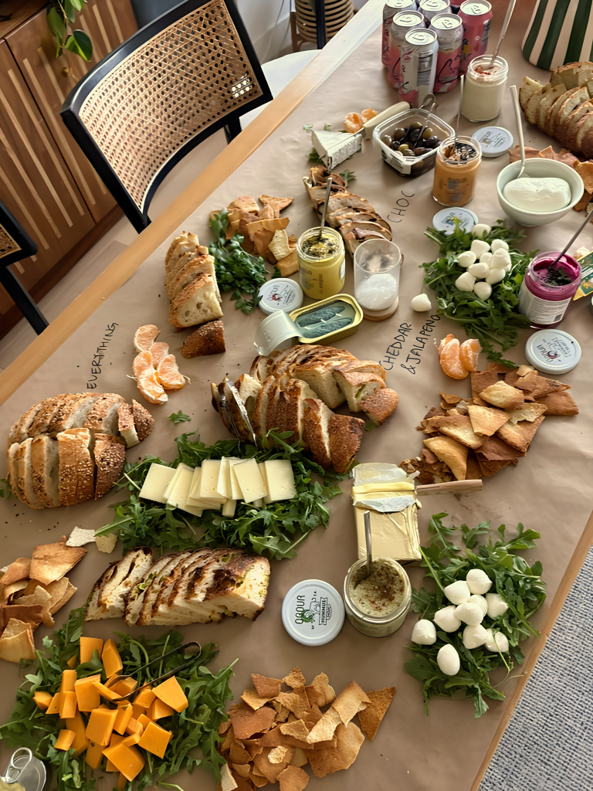

Love Fresh Bread? So Do We!

About Us
Kirana Bakehouse is a microbakery based in Menlo Park, specializing in Made-to-Order Artisanal Sourdough.
Each loaf is naturally leavened, slowly fermented, and baked to a deep golden crust in small batches.
No shortcuts. No commercial yeast. Just time, care, and tradition.
Trained at Le Cordon Bleu in Paris, Kirana Bakehouse is rooted in classical technique with a deep love for sourdough, reimagined with inspired, seasonal inclusions and flavors.
At its heart, this is about community. Bread meant to be shared, to bring people together, and to be part of everyday moments.
Home of Inclusion Sourdoughs
Every Kirana loaf has the same foundation: Organic Flour, Water, Salt, and Liquid Levain. We build flavour through thoughtfully chosen inclusions, always prioritising certified organic ingredients.
Our menu follows the rhythm of the seasons, with Spring/Summer and Fall/Winter lineups. Discover the current selection when placing your order for pickup or delivery.
Pickup
Prefer to pick up your fresh loaves in person? We’d love to see you.
- Pickup days: Wednesdays & Saturdays
- Location: Lytton Plaza, Downtown Palo Alto (more to come! Join our storefront on Hotplate for the latest)
Your order will be freshly baked the same day as your pickup. Just come by at your selected pickup time on Hotplate—we’ll have everything prepared for you
Delivery
We offer limited local delivery for added flexibility and ideal for,
- Busy parents
- Demanding work schedules
- Anyone who prefers doorstep service
We handle all deliveries ourselves and do not use third-party delivery services, which is why availability is limited to certain areas.


Frequently Asked Questions
Where can I see your menu?
Are all your ingredients organic?
Yes! We only use high-quality, organic ingredients for all our loaves. Our bread is naturally leavened and contains no preservatives or commercial yeast.
Do the loaves come pre-sliced?
Yes — all loaves are pre-sliced for convenience, whether you're enjoying them fresh, sharing, or freezing.
If you prefer your loaf unsliced, just leave a note at checkout and we’ll keep it whole.
How should I store my bread?
Store your loaf at room temperature in a paper bag or wrapped in a clean kitchen towel. It’s best enjoyed within 2–3 days of baking.
Avoid refrigeration, as it can dry the bread out. If you won’t finish it in time, slice the loaf and freeze it in an airtight bag for up to 1–2 months. Toast or warm before serving.
What if I have dietary restrictions or allergies?
All loaves contain gluten (wheat flour). Some varieties may include dairy depending on the inclusion.
Full allergen details are available on our Allergen Info page. If you have specific concerns, feel free to contact us before ordering.
Can I request inclusions or submit ideas?
Yes — we love hearing ideas. You can reach us anytime via email or Instagram with flavour suggestions or inspiration.
While we can’t make every request, we always keep them in mind when developing new seasonal loaves.
Do you do catering or bulk orders?
Yes, we do! For catering or larger orders, please email us at hellokiranabakehouse@gmail.com with your request and details.
Is this a licensed bakery?
Yes, we operate as a licensed California Cottage Food Operation, are food safety certified, and registered under CFO Permit #26-00019589 in San Mateo County.
Do you have a physical location?
Not at the moment. We’re an online-only bakery, offering pickup and local delivery.
I have more questions! How do I get in touch?
You can reach us anytime at hellokiranabakehouse@gmail.com or send us a DM on Instagram @kiranabakehouse.